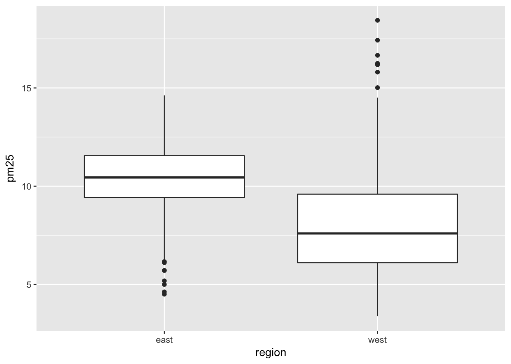
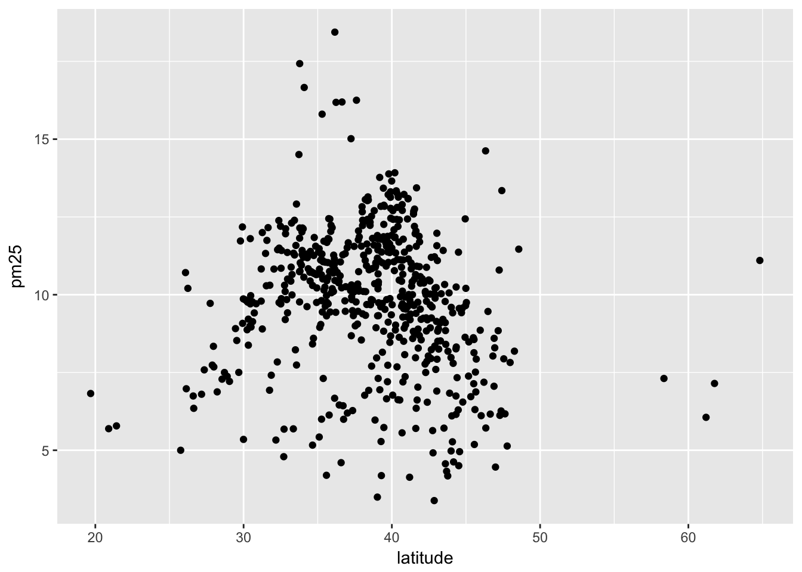
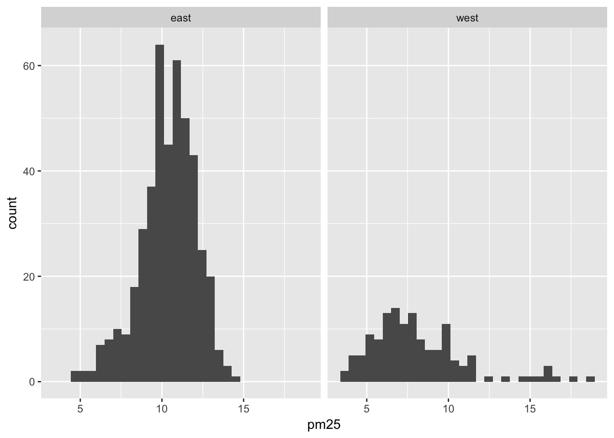
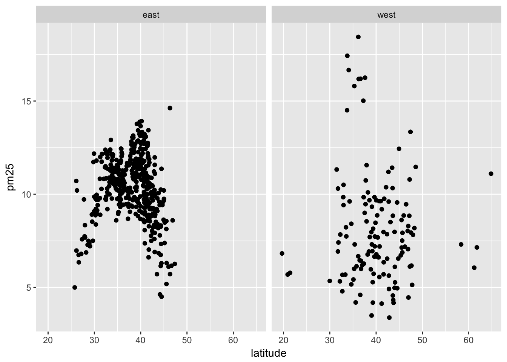
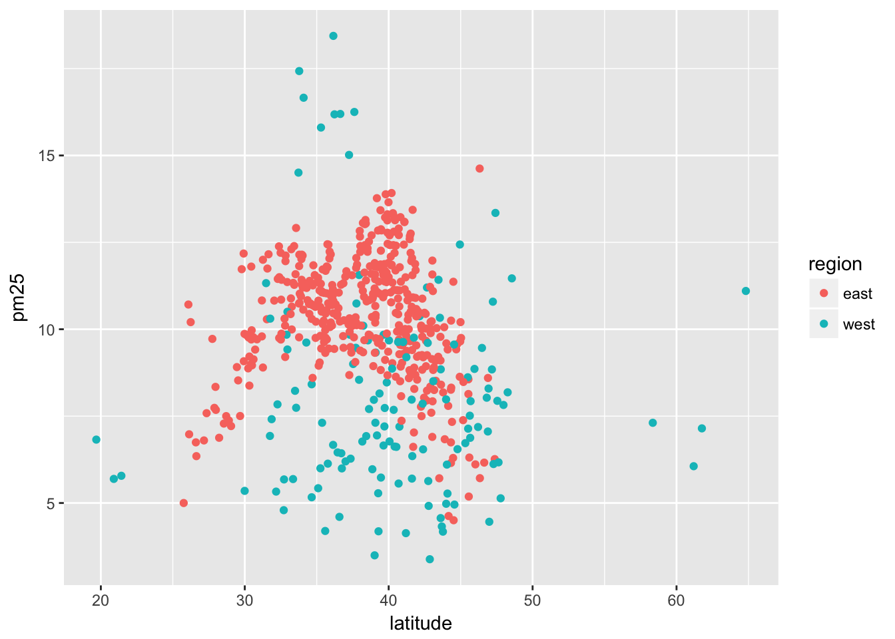

Exploratory data analysis
library(tidyverse)Exploratory data analysis (EDA) is often the first step to visualizing and transforming your data.1 Hadley Wickham defines EDA as an iterative cycle:
- Generate questions about your data
- Search for answers by visualising, transforming, and modeling your data
- Use what you learn to refine your questions and or generate new questions
- Rinse and repeat until you publish a paper
EDA is fundamentally a creative process - it is not an exact science. It requires knowledge of your data and a lot of time. At the most basic level, it involves answering two questions
- What type of variation occurs within my variables?
- What type of covariation occurs between my variables?
EDA relies heavily on visualizations and graphical interpretations of data. While statistical modeling provides a “simple” low-dimensional representation of relationships between variables, they generally require advanced knowledge of statistical techniques and mathematical principles. Visualizations and graphs are typically much more interpretable and easy to generate, so you can rapidly explore many different aspects of a dataset. The ultimate goal is to generate simple summaries of the data that inform your question(s). It is not the final stop in the data science pipeline, but still an important one.
Characteristics of exploratory graphs
Graphs generated through EDA are distinct from final graphs. You will typically generate dozens, if not hundreds, of exploratory graphs in the course of analyzing a dataset. Of these graphs, you may end up publishing one or two in a final format. One purpose of EDA is to develop a personal understanding of the data, so all your code and graphs should be geared towards that purpose. Important details that you might add if you were to publish a graph2 are not necessary in an exploratory graph. For example, say I want to explore how the price of a diamond varies with it’s carat size. An appropriate technique would be a scatterplot:
ggplot(diamonds, aes(carat, price)) +
geom_point() +
geom_smooth()## `geom_smooth()` using method = 'gam'
This is a great exploratory graph: it took just three lines of code and clearly establishes an exponential relationship between the carat size and price of a diamond. But what if I were publishing this graph in a research note? I would probably submit something to the editor that looks like this:
ggplot(diamonds, aes(carat, price)) +
geom_point(alpha = .01) +
geom_smooth(se = FALSE) +
scale_y_continuous(labels = scales::dollar) +
labs(title = "Exponential relationship between carat size and price",
subtitle = "Sample of 54,000 diamonds",
x = "Carat size",
y = "Price") +
theme_minimal()## `geom_smooth()` using method = 'gam'
These additional details are very helpful in communicating the meaning of the graph, but take a substantial amount of time and code to write. For EDA, you don’t have to add this detail to every exploratory graph.
Fuel economy data
The U.S. Environmental Protection Agency (EPA) collects fuel economy data on all vehicles sold in the United States. Here let’s examine a subset of that data for 38 popular models of cars sold between 1999 and 2008 to answer the following question: how does highway fuel efficiency vary across cars?
Import the data
The mpg dataset is included as part of the ggplot2 library:
library(ggplot2)
data("mpg")
mpg## # A tibble: 234 x 11
## manufacturer model displ year cyl trans drv cty hwy fl
## <chr> <chr> <dbl> <int> <int> <chr> <chr> <int> <int> <chr>
## 1 audi a4 1.80 1999 4 auto(l… f 18 29 p
## 2 audi a4 1.80 1999 4 manual… f 21 29 p
## 3 audi a4 2.00 2008 4 manual… f 20 31 p
## 4 audi a4 2.00 2008 4 auto(a… f 21 30 p
## 5 audi a4 2.80 1999 6 auto(l… f 16 26 p
## 6 audi a4 2.80 1999 6 manual… f 18 26 p
## 7 audi a4 3.10 2008 6 auto(a… f 18 27 p
## 8 audi a4 quat… 1.80 1999 4 manual… 4 18 26 p
## 9 audi a4 quat… 1.80 1999 4 auto(l… 4 16 25 p
## 10 audi a4 quat… 2.00 2008 4 manual… 4 20 28 p
## # ... with 224 more rows, and 1 more variable: class <chr>glimpse(mpg)## Observations: 234
## Variables: 11
## $ manufacturer <chr> "audi", "audi", "audi", "audi", "audi", "audi", "...
## $ model <chr> "a4", "a4", "a4", "a4", "a4", "a4", "a4", "a4 qua...
## $ displ <dbl> 1.8, 1.8, 2.0, 2.0, 2.8, 2.8, 3.1, 1.8, 1.8, 2.0,...
## $ year <int> 1999, 1999, 2008, 2008, 1999, 1999, 2008, 1999, 1...
## $ cyl <int> 4, 4, 4, 4, 6, 6, 6, 4, 4, 4, 4, 6, 6, 6, 6, 6, 6...
## $ trans <chr> "auto(l5)", "manual(m5)", "manual(m6)", "auto(av)...
## $ drv <chr> "f", "f", "f", "f", "f", "f", "f", "4", "4", "4",...
## $ cty <int> 18, 21, 20, 21, 16, 18, 18, 18, 16, 20, 19, 15, 1...
## $ hwy <int> 29, 29, 31, 30, 26, 26, 27, 26, 25, 28, 27, 25, 2...
## $ fl <chr> "p", "p", "p", "p", "p", "p", "p", "p", "p", "p",...
## $ class <chr> "compact", "compact", "compact", "compact", "comp...Each row represents a model of car sold in a given year.3 hwy identifies the highway miles per gallon for the vehicle.
Assessing variation
Assessing variation requires examining the values of a variable as they change from measurement to measurement. Here, let’s examine variation in highway fuel efficiency and related variables using a few different graphical techniques.
Histogram
ggplot(mpg, aes(hwy)) +
geom_histogram()## `stat_bin()` using `bins = 30`. Pick better value with `binwidth`.
It appears there is a high concentration of vehicles with highway fuel efficiency between 20 and 30 mpg, with a smaller number of vehicles between 15-20 and some outliers with high fuel efficiency (larger values indicate more efficient vehicles). To view the actual data points, we use geom_rug():
ggplot(mpg, aes(hwy)) +
geom_histogram() +
geom_rug()## `stat_bin()` using `bins = 30`. Pick better value with `binwidth`.
One thing geom_rug() does is illustrate that while hwy is a continuous variable, it is measured in integer units - that is, there are no fractional values in the dataset. 26 miles per gallon on the highway is the most common mpg rate in the dataset. Why is that? Something perhaps to investigate further.
By default, geom_histogram() bins the observations into 30 intervals of equal width. You can adjust this using the bins parameter:
ggplot(mpg, aes(hwy)) +
geom_histogram(bins = 50) +
geom_rug()
ggplot(mpg, aes(hwy)) +
geom_histogram(bins = 10) +
geom_rug()
Notice the spike at 9 micrograms per cubic meter. We cannot immediately tell what causes this spike. but it could be worth exploring later.
Bar chart
ggplot(mpg, aes(class)) +
geom_bar()
To examine the distribution of a categorical variable, we can use a bar chart. Here we see the most common type of vehicle in the dataset is an SUV, not surprising given Americans’ car culture.
Covariation
Covariation is the tendency for the values of two or more variables to vary together in a related way. Visualizing data in two or more dimensions allows us to assess covariation and differences in variation across groups. There are a few major approaches to visualizing two dimensions:
- Two-dimensional graphs
- Multiple window plots
- Utilizing additional channels
Two-dimensional graphs
Two-dimensional graphs are visualizations that are naturally designed to visualize two variables. For instance, if you have a discrete variable and a continuous variable, you could use a box plot to visualize the distribution of the values of the continuous variable for each category in the discrete variable:
ggplot(mpg, aes(class, hwy)) +
geom_boxplot()
Here we see that on average, compact and midsize vehicles have the highest highway fuel efficiency whereas pickups and SUVs have the lowest fuel efficiency. What might explain these differences? Another question you could explore after viewing this visualization.
If you have two continuous variables, you may use a scatterplot which maps each variable to an \(x\) or \(y\)-axis coordinate. Here we visualize the relationship between engine displacement (the physical size of the engine) and highway fuel efficiency:
ggplot(mpg, aes(displ, hwy)) +
geom_point()
As engines get larger, highway fuel efficiency declines.
Multiple window plots
Sometimes you want to compare the conditional distribution of a variable across specific groups or subsets of the data. To do that, we implement a multiple window plot (also known as a trellis or facet graph). This involves drawing the same plot repeatedly, using a separate window for each category defined by a variable. For instance, if we want to examine variation in highway fuel efficiency separately for type of drive (front wheel, rear wheel, or 4 wheel), we could draw a graph like this:
ggplot(mpg, aes(hwy)) +
geom_histogram() +
facet_wrap(~ drv)## `stat_bin()` using `bins = 30`. Pick better value with `binwidth`.
Highway fuel efficiency is right-skewed for 4 and rear wheel drive vehicles, whereas front wheel drive vehicles are generally unskewed with a couple outliers of 40+ mpg.
You may also want to use a multiple windows plot with a two-dimensional graph. For example, the relationship between engine displacement and highway fuel efficiency by drive type:
ggplot(mpg, aes(displ, hwy)) +
geom_point() +
facet_wrap(~ drv)
Utilizing additional channels
If you want to visualize three or more dimensions of data without resorting to 3D animations4 or window plots, the best approach is to incorporate additional channels into the visualization. Channels are used to encode variables inside of a graphic. For instance, a scatterplot uses vertical and horizontal spatial position channels to encode the values for two variables in a visually intuitive manner.
Depending on the type of graph and variables you wish to encode, there are several different channels you can use to encode additional information. For instance, color can be used to distinguish between classes in a categorical variable.
ggplot(mpg, aes(displ, hwy, color = class)) +
geom_point()
We can even use a fourth channel to communicate another variable (number of cylinders) by making use of the size channel:
ggplot(mpg, aes(displ, hwy, color = class, size = cyl)) +
geom_point()
Note that some channels are not always appropriate, even if they can technically be implemented. For example, instead of using a color channel to visualize class, why not distinguish each type of car using the point’s shape?
ggplot(mpg, aes(displ, hwy, shape = class)) +
geom_point()## Warning: The shape palette can deal with a maximum of 6 discrete values
## because more than 6 becomes difficult to discriminate; you have 7.
## Consider specifying shapes manually if you must have them.## Warning: Removed 62 rows containing missing values (geom_point).
With this many categories, shape is not very useful in visually distinguishing between each car’s class.
Session Info
devtools::session_info()## Session info -------------------------------------------------------------## setting value
## version R version 3.4.3 (2017-11-30)
## system x86_64, darwin15.6.0
## ui RStudio (1.1.447)
## language (EN)
## collate en_US.UTF-8
## tz America/Chicago
## date 2018-05-23## Packages -----------------------------------------------------------------## package * version date
## abind 1.4-5 2016-07-21
## assertthat 0.2.0 2017-04-11
## babynames * 0.3.0 2017-04-14
## backports 1.1.2 2017-12-13
## base * 3.4.3 2017-12-07
## base64enc 0.1-3 2015-07-28
## bigrquery * 0.4.1 2017-06-26
## bindr 0.1.1 2018-03-13
## bindrcpp * 0.2.2 2018-03-29
## bit 1.1-12 2014-04-09
## bit64 0.9-7 2017-05-08
## bitops 1.0-6 2013-08-17
## blob 1.1.1 2018-03-25
## boot * 1.3-20 2017-08-06
## broom * 0.4.4 2018-03-29
## callr 2.0.3 2018-04-11
## caret * 6.0-79 2018-03-29
## cellranger 1.1.0 2016-07-27
## class 7.3-14 2015-08-30
## cli 1.0.0 2017-11-05
## clipr 0.4.0 2017-11-03
## codetools 0.2-15 2016-10-05
## colorspace 1.3-2 2016-12-14
## compiler 3.4.3 2017-12-07
## config 0.3 2018-03-27
## crayon 1.3.4 2017-10-03
## curl * 3.2 2018-03-28
## CVST 0.2-1 2013-12-10
## datasets * 3.4.3 2017-12-07
## DBI 0.8 2018-03-02
## dbplyr 1.2.1 2018-02-19
## ddalpha 1.3.2 2018-04-08
## debugme 1.1.0 2017-10-22
## DEoptimR 1.0-8 2016-11-19
## devtools 1.13.5 2018-02-18
## digest 0.6.15 2018-01-28
## dimRed 0.1.0 2017-05-04
## dplyr * 0.7.4 2017-09-28
## DRR 0.0.3 2018-01-06
## e1071 * 1.6-8 2017-02-02
## emo 0.0.0.9000 2017-10-03
## evaluate 0.10.1 2017-06-24
## FNN * 1.1 2013-07-31
## forcats * 0.3.0 2018-02-19
## foreach * 1.4.4 2017-12-12
## foreign 0.8-69 2017-06-22
## gam * 1.15 2018-02-25
## gapminder * 0.3.0 2017-10-31
## gbm * 2.1.3 2017-03-21
## geometry 0.3-6 2015-09-09
## geosphere 1.5-7 2017-11-05
## gganimate * 0.1.0.9000 2017-05-26
## ggmap * 2.6.1 2016-01-23
## ggplot2 * 2.2.1.9000 2018-05-18
## ggrepel * 0.7.0 2017-09-29
## ggstance * 0.3 2016-11-16
## glue 1.2.0 2017-10-29
## gower 0.1.2 2017-02-23
## graphics * 3.4.3 2017-12-07
## grDevices * 3.4.3 2017-12-07
## grid 3.4.3 2017-12-07
## gridExtra * 2.3 2017-09-09
## gtable 0.2.0 2016-02-26
## gutenbergr * 0.1.4 2018-01-26
## h2o * 3.16.0.2 2017-12-01
## haven * 1.1.1 2018-01-18
## here * 0.1 2017-05-28
## hexbin * 1.27.2 2018-01-15
## highr 0.6 2016-05-09
## hms 0.4.2 2018-03-10
## htmltools 0.3.6 2017-04-28
## htmlwidgets 1.2 2018-04-19
## httpuv 1.3.6.2 2018-03-02
## httr * 1.3.1 2017-08-20
## igraph 1.2.1 2018-03-10
## ipred 0.9-6 2017-03-01
## ISLR * 1.2 2017-10-20
## iterators 1.0.9 2017-12-12
## janeaustenr 0.1.5 2017-06-10
## jpeg 0.1-8 2014-01-23
## jsonlite * 1.5 2017-06-01
## kernlab 0.9-25 2016-10-03
## kknn * 1.3.1 2016-03-26
## knitr * 1.20 2018-02-20
## labeling 0.3 2014-08-23
## lattice * 0.20-35 2017-03-25
## lava 1.6.1 2018-03-28
## lazyeval 0.2.1 2017-10-29
## lubridate * 1.7.4 2018-04-11
## lvplot * 0.2.0 2016-05-01
## magic 1.5-8 2018-01-26
## magrittr 1.5 2014-11-22
## mapproj 1.2.6 2018-03-29
## maps * 3.3.0 2018-04-03
## MASS 7.3-49 2018-02-23
## Matrix 1.2-14 2018-04-09
## MatrixModels * 0.4-1 2015-08-22
## memoise 1.1.0 2017-04-21
## methods * 3.4.3 2017-12-07
## microbenchmark * 1.4-4 2018-01-24
## mime 0.5 2016-07-07
## miniUI 0.1.1 2016-01-15
## mnormt 1.5-5 2016-10-15
## ModelMetrics 1.1.0 2016-08-26
## modelr * 0.1.1 2017-08-10
## modeltools 0.2-21 2013-09-02
## munsell 0.4.3 2016-02-13
## nlme 3.1-137 2018-04-07
## NLP 0.1-11 2017-08-15
## nnet * 7.3-12 2016-02-02
## nycflights13 * 0.2.2 2017-01-27
## openssl 1.0.1 2018-03-03
## parallel * 3.4.3 2017-12-07
## pillar 1.2.1 2018-02-27
## pkgconfig 2.0.1 2017-03-21
## plyr 1.8.4 2016-06-08
## png 0.1-7 2013-12-03
## pROC * 1.11.0 2018-03-25
## prodlim 1.6.1 2017-03-06
## profvis * 0.3.5 2018-02-22
## proto 1.0.0 2016-10-29
## psych 1.8.3.3 2018-03-30
## purrr * 0.2.4 2017-10-18
## quantreg * 5.35 2018-02-02
## R6 2.2.2 2017-06-17
## randomForest * 4.6-14 2018-03-25
## rappdirs 0.3.1 2016-03-28
## rcfss * 0.1.5 2018-05-01
## Rcpp 0.12.16 2018-03-13
## RcppRoll 0.2.2 2015-04-05
## RCurl 1.95-4.10 2018-01-04
## readr * 1.1.1 2017-05-16
## readxl * 1.0.0 2017-04-18
## rebird * 0.4.0 2017-04-26
## recipes 0.1.2 2018-01-11
## reprex * 0.2.0 2018-04-09
## reshape2 1.4.3 2017-12-11
## RgoogleMaps 1.4.1 2016-09-18
## rjson 0.2.15 2014-11-03
## rlang 0.2.0.9001 2018-05-18
## rmarkdown 1.9 2018-03-01
## robustbase 0.92-8 2017-11-01
## rpart 4.1-13 2018-02-23
## rprojroot 1.3-2 2018-01-03
## rsconnect 0.8.8 2018-03-09
## rsparkling * 0.2.3 2018-03-08
## RSQLite * 2.1.0 2018-03-29
## rstudioapi 0.7 2017-09-07
## rtweet * 0.6.0 2017-11-16
## rvest * 0.3.2 2016-06-17
## scales * 0.5.0.9000 2018-05-18
## sfsmisc 1.1-2 2018-03-05
## shiny * 1.0.5 2017-08-23
## slam 0.1-42 2017-12-21
## SnowballC 0.5.1 2014-08-09
## sp 1.2-7 2018-01-19
## sparklyr * 0.7.0 2018-01-23
## SparseM * 1.77 2017-04-23
## splines * 3.4.3 2017-12-07
## stats * 3.4.3 2017-12-07
## stats4 3.4.3 2017-12-07
## stringi 1.1.7 2018-03-12
## stringr * 1.3.0 2018-02-19
## survival * 2.41-3 2017-04-04
## tibble * 1.4.2 2018-01-22
## tidyr * 0.8.0 2018-01-29
## tidyselect 0.2.4 2018-02-26
## tidytext * 0.1.8.900 2018-05-10
## tidyverse * 1.2.1 2017-11-14
## timeDate 3043.102 2018-02-21
## titanic * 0.1.0 2015-08-31
## tm 0.7-3 2017-12-06
## tokenizers 0.2.1 2018-03-29
## tools 3.4.3 2017-12-07
## topicmodels * 0.2-7 2017-11-03
## tree * 1.0-39 2018-03-17
## tweenr * 0.1.5 2016-10-10
## utf8 1.1.3 2018-01-03
## utils * 3.4.3 2017-12-07
## whisker 0.3-2 2013-04-28
## withr 2.1.2 2018-05-18
## XML * 3.98-1.10 2018-02-19
## xml2 * 1.2.0 2018-01-24
## xtable 1.8-2 2016-02-05
## yaml 2.1.18 2018-03-08
## source
## CRAN (R 3.4.0)
## CRAN (R 3.4.0)
## CRAN (R 3.4.0)
## CRAN (R 3.4.3)
## local
## CRAN (R 3.4.0)
## CRAN (R 3.4.1)
## CRAN (R 3.4.3)
## CRAN (R 3.4.4)
## CRAN (R 3.4.0)
## CRAN (R 3.4.0)
## CRAN (R 3.4.0)
## CRAN (R 3.4.4)
## CRAN (R 3.4.3)
## CRAN (R 3.4.3)
## CRAN (R 3.4.3)
## CRAN (R 3.4.4)
## CRAN (R 3.4.0)
## CRAN (R 3.4.3)
## CRAN (R 3.4.2)
## CRAN (R 3.4.2)
## CRAN (R 3.4.3)
## CRAN (R 3.4.0)
## local
## CRAN (R 3.4.4)
## Github (gaborcsardi/crayon@b5221ab)
## CRAN (R 3.4.4)
## CRAN (R 3.4.0)
## local
## CRAN (R 3.4.3)
## CRAN (R 3.4.3)
## CRAN (R 3.4.4)
## CRAN (R 3.4.2)
## CRAN (R 3.4.0)
## CRAN (R 3.4.3)
## CRAN (R 3.4.3)
## CRAN (R 3.4.0)
## CRAN (R 3.4.2)
## CRAN (R 3.4.3)
## CRAN (R 3.4.0)
## Github (hadley/emo@9f2e0f2)
## CRAN (R 3.4.1)
## CRAN (R 3.4.0)
## CRAN (R 3.4.3)
## CRAN (R 3.4.3)
## CRAN (R 3.4.3)
## CRAN (R 3.4.3)
## CRAN (R 3.4.2)
## CRAN (R 3.4.0)
## CRAN (R 3.4.0)
## CRAN (R 3.4.2)
## Github (dgrtwo/gganimate@bf82002)
## CRAN (R 3.4.0)
## Github (tidyverse/ggplot2@54de616)
## CRAN (R 3.4.2)
## CRAN (R 3.4.0)
## CRAN (R 3.4.2)
## CRAN (R 3.4.0)
## local
## local
## local
## CRAN (R 3.4.1)
## CRAN (R 3.4.0)
## CRAN (R 3.4.3)
## CRAN (R 3.4.3)
## CRAN (R 3.4.3)
## CRAN (R 3.4.0)
## CRAN (R 3.4.3)
## CRAN (R 3.4.0)
## CRAN (R 3.4.3)
## CRAN (R 3.4.0)
## cran (@1.2)
## CRAN (R 3.4.3)
## CRAN (R 3.4.1)
## CRAN (R 3.4.4)
## CRAN (R 3.4.0)
## CRAN (R 3.4.2)
## CRAN (R 3.4.3)
## CRAN (R 3.4.0)
## CRAN (R 3.4.0)
## CRAN (R 3.4.0)
## CRAN (R 3.4.0)
## CRAN (R 3.4.0)
## CRAN (R 3.4.3)
## CRAN (R 3.4.0)
## CRAN (R 3.4.3)
## CRAN (R 3.4.4)
## CRAN (R 3.4.2)
## CRAN (R 3.4.3)
## CRAN (R 3.4.0)
## CRAN (R 3.4.3)
## CRAN (R 3.4.0)
## CRAN (R 3.4.4)
## CRAN (R 3.4.4)
## CRAN (R 3.4.3)
## CRAN (R 3.4.4)
## CRAN (R 3.4.0)
## CRAN (R 3.4.0)
## local
## CRAN (R 3.4.3)
## CRAN (R 3.4.0)
## CRAN (R 3.4.0)
## CRAN (R 3.4.0)
## CRAN (R 3.4.0)
## local
## CRAN (R 3.4.0)
## CRAN (R 3.4.0)
## CRAN (R 3.4.4)
## CRAN (R 3.4.1)
## CRAN (R 3.4.3)
## CRAN (R 3.4.0)
## CRAN (R 3.4.3)
## local
## CRAN (R 3.4.3)
## CRAN (R 3.4.0)
## CRAN (R 3.4.0)
## CRAN (R 3.4.0)
## CRAN (R 3.4.4)
## CRAN (R 3.4.0)
## CRAN (R 3.4.3)
## CRAN (R 3.4.0)
## CRAN (R 3.4.4)
## CRAN (R 3.4.2)
## CRAN (R 3.4.3)
## CRAN (R 3.4.0)
## CRAN (R 3.4.4)
## CRAN (R 3.4.0)
## local
## CRAN (R 3.4.4)
## CRAN (R 3.4.0)
## CRAN (R 3.4.3)
## CRAN (R 3.4.0)
## CRAN (R 3.4.0)
## CRAN (R 3.4.0)
## CRAN (R 3.4.3)
## Github (tidyverse/reprex@781696d)
## CRAN (R 3.4.3)
## CRAN (R 3.4.0)
## CRAN (R 3.4.0)
## Github (r-lib/rlang@854174a)
## CRAN (R 3.4.3)
## CRAN (R 3.4.2)
## CRAN (R 3.4.3)
## CRAN (R 3.4.3)
## CRAN (R 3.4.4)
## CRAN (R 3.4.4)
## CRAN (R 3.4.4)
## CRAN (R 3.4.1)
## CRAN (R 3.4.2)
## CRAN (R 3.4.0)
## Github (hadley/scales@d767915)
## CRAN (R 3.4.4)
## cran (@1.0.5)
## CRAN (R 3.4.3)
## CRAN (R 3.4.0)
## CRAN (R 3.4.3)
## CRAN (R 3.4.3)
## CRAN (R 3.4.0)
## local
## local
## local
## CRAN (R 3.4.3)
## CRAN (R 3.4.3)
## CRAN (R 3.4.3)
## CRAN (R 3.4.3)
## CRAN (R 3.4.3)
## CRAN (R 3.4.3)
## Github (juliasilge/tidytext@b6c4ed7)
## CRAN (R 3.4.2)
## CRAN (R 3.4.3)
## CRAN (R 3.4.0)
## CRAN (R 3.4.3)
## CRAN (R 3.4.4)
## local
## CRAN (R 3.4.2)
## CRAN (R 3.4.4)
## CRAN (R 3.4.0)
## CRAN (R 3.4.3)
## local
## CRAN (R 3.4.0)
## Github (jimhester/withr@79d7b0d)
## CRAN (R 3.4.3)
## CRAN (R 3.4.3)
## CRAN (R 3.4.0)
## CRAN (R 3.4.4)This work is licensed under the CC BY-NC 4.0 Creative Commons License.